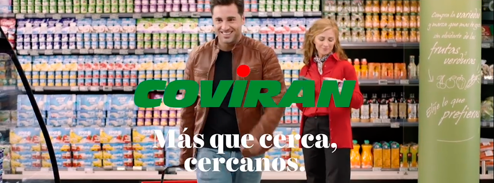

atencionalcliente@coviran.es
atencionalcliente@coviran.es
Acceso Privado



Los supermercados Covirán siguen
dando pasos en materia de
responsabilidad y eficiencia

Covirán, 55 años trabajando por la
economía local

Covirán muestra su apoyo a la lucha
contra el cáncer
Supermercados
Folletos
Otros Servicios
Redes Sociales
Colaboradores 50 Aniversario Coviran

COVIRAN S.C.A. Atención al cliente: 901 116 995